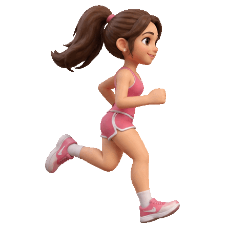

Una carrera diferente.
☀️
🌳 🌷 🌳 🌼 🌳 🌷 🌳 🌼

KM 0Distancia 0,00 km
Energía 100%
¡Hola, Flor!
Espero que te diviertas. Como sé que te gusta correr, se me ocurrió prepararte algo un poquito diferente. Son 10 kilómetros y ocho desafíos. Esta vez no me interesa cuánto tardás, sino que llegues a la meta. No te voy a adelantar mucho más, vas a tener que descubrirlo vos.
🌼 ☀️ 🌷
Flor
♥